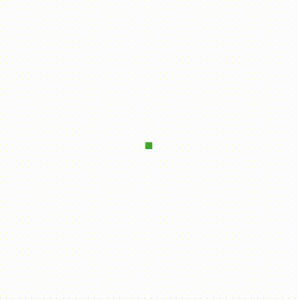
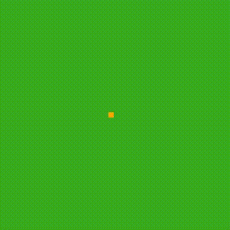
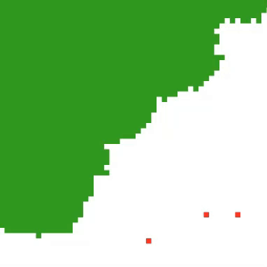

Réalisation d'un
Jeu de la vie
Inspiré du concept de Von Neumann, mon jeu de la vie propose
une perspective originale par rapport à la version de base.
Ci-dessus une ancienne version (d'illustration) de mon jeu de la vie version hors-ligne.
Le projet
Introduction
L'emblématique jeu de la vie de Von Neumann, un automate cellulaire fascinant introduit par le mathématicien John Conway, se distingue par la simplicité avec laquelle il est possible de simuler des éléments de la vie. En reprenant les idées de son concept, j'ai pu concevoir une version personnalisée du jeu de la vie.
Cadre de travail
Ce projet a été réalisé en 16 heures de travail à l'aide sur logiciel Visual Studio Code. Un grand merci à Anthony Saccardo, étudiant à l'école 42 et animateur de TUMO, qui m'a guidé tout au long du projet en me fournissant notamment les bases du projet (site internet, environnement de programmation...), mais qui m'a aussi enseigné la programmation en JavaScript, la mise en place d'un serveur, l'utilisation de GitHub, de Node.js et de ses paquets (tels que Express et Socket.io).
Fonctionnement
Mon jeu de la vie a pour thème la nature. Il existe diverses cellules : l'herbe, les mangeurs d'herbes, les prédateurs, l'herbe empoisonnée, la pierre. Chacune de ces cellules évolue au sein de cycles, où certaines disparaissent au profit d'autres à chaque itération, tout en permettant l'apparition de nouvelles cellules.
Structure du projet
Le projet est divisé en deux parties. D'un côté, la partie utilisateur (front-end), et de l'autre, la partie serveur (back-end).
Front-end
Dans la partie front-end se trouve un site qui permet à plusieurs utilisateurs de visualiser simultanément la matrice et de placer graphiquement des cellules dans cette même matrice en cliquant. L'utilisateur peut également augmenter ou ralentir la vitesse à laquelle les cycles s'enchaînent. À noter : une protection empêche l'utilisateur de saturer le serveur en envoyant trop de requêtes.Back-end
Chaque action de l'utilisateur est transmise au serveur sous la forme d'un événement correspondant à cette action. Lorsqu'un événement est reçu, signifiant par exemple l'ajout graphique d'une cellule par un clic, le serveur procède à la modification de la matrice. Ensuite, cette matrice actualisée est renvoyée au site.Exemple
socket.on('click', (x, y, selection) => {
if (selection == 'cell-grass-eater'){
game.grid[y][x] = new GrassEater({x, y, game, grid: game.grid})
}
})
Fonction écoutant les clics sur la matrice de jeu et ajoutant une cellule de type GrassEater (mangeur d'herbe) aux coordonnées sélectionnées.
Les types de cellules
Passons en revue les divers types de cellules :
L'Herbe

La cellule d'Herbe est l'une des seules cellules (avec le rocher et la bombe) qui ne meurt pas de faim avec le temps.
Une cellule d'herbe peut grandir toute seule, chaque descendant créant une nouvelle cellule d'herbe jusqu'à éventuellement remplir la matrice entière. Dans la configuration de mon jeu, l'herbe est indispensable à la vie. Sans elle, il n'y a pas de mangeurs d'herbe, et donc pas de prédateurs.
Les mangeurs d'herbes
Comme leur nom l'indique, les cellules mangeuses d'herbe sont herbivores.
Elles ont besoin d'herbe pour se reproduire et survivre. Ainsi, si une cellule d'herbe n'est pas dans leur périmètre (zone alentour) pendant plus de 30 cycles, ces dernières meurent. Après avoir mangé 5 cellules d'herbe, elles produisent une nouvelle cellule mangeuse d'herbe. En mangeant, la cellule d'herbe est détruite.
L'Herbe empoisonnée
 Une copie conforme de l'herbe à quelques différences près.
Une copie conforme de l'herbe à quelques différences près.
Si un mangeur d'herbe consomme cette cellule, il meurt et l'herbe en question disparaît. Cette herbe pousse moins rapidement que l'herbe normale et devient ordinaire après 250 cycles.
Les prédateurs
Les prédateurs ne se nourrissent que de mangeurs d'herbes.
Ils balayent la zone dans un rayon de 50 cellules autour d'eux à la recherche de proies herbivores avant de se diriger vers l'une d'elles. Si un prédateur ne se nourrit pas pendant 40 cycles, il meurt de faim. Un nouveau descendant apparaît dès la consommation du cinquième mangeur d'herbe.
La bombe
 La bombe constitue l'unique élément artificiel du jeu.
La bombe constitue l'unique élément artificiel du jeu.
Cette cellule demeure inerte. Dès qu'un herbivore se situe dans un rayon de 25 pixels autour de la bombe, celle-ci se dirige vers l'herbivore avant d'exploser, créant un cratère de dimension aléatoire (et détruisant les cellules environnantes) qui persiste pendant 70 cycles.
La Pierre
 Une cellule totalement inerte et uniquement destructible par une bombe.
Une cellule totalement inerte et uniquement destructible par une bombe.
Sa solidité en fait le rempart idéal face à tout ce qui bouge : mangeurs d'herbes, bombes, prédateurs, etc. Le rocher restera en place tant qu'il n'aura pas été détruit par une bombe ou retiré par l'utilisateur.
Code source du projet
Le projet est disponible en open-source sur GitHub en cliquant sur le bouton ci-dessous.